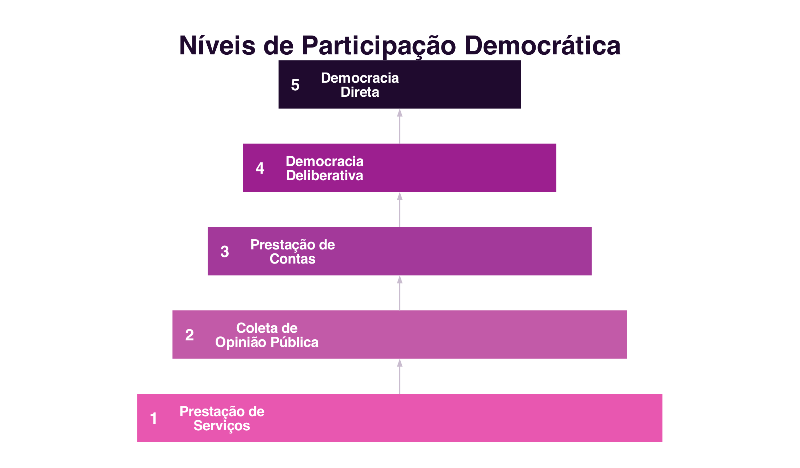
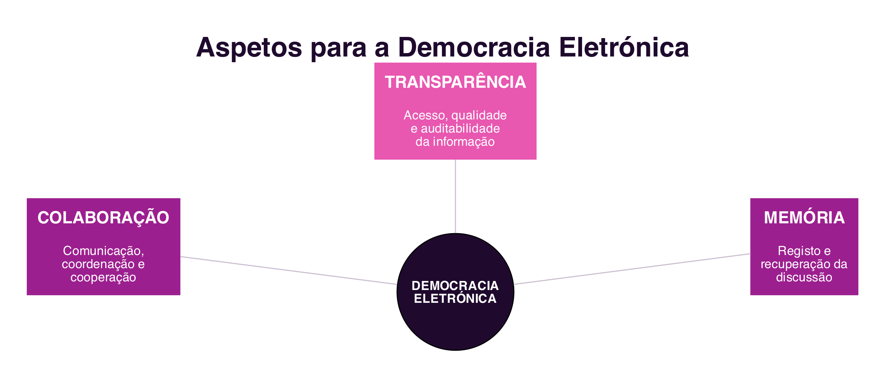

7 Democracia Eletrónica
Democracia Eletrónica
Introdução
O capítulo anterior mostrou como os Ambientes Virtuais Colaborativos recriam, no espaço digital, formas de identidade, interação e presença próprias do mundo real (Secção 6.5). Este capítulo aplica uma lógica semelhante a um domínio distinto: a participação política. As mesmas tecnologias de interação social que ligam comunidades virtuais podem também mediar a relação entre cidadãos e governo, mas fazê-lo não é automático: a tecnologia, por si só, não gera mais democracia. O que determina o resultado é o nível de participação desenhado no sistema.
7.1 Governo Eletrónico e Democracia Eletrónica
As tecnologias de interação social têm possibilitado novas formas de expressão e mobilização política dos cidadãos. Um caso histórico ilustra bem este potencial: em 2009, durante os protestos que se seguiram à reeleição contestada do presidente do Irão, os manifestantes contornaram a censura estatal e usaram o Twitter para relatar, em tempo real, o que acontecia no país, numa altura em que o governo tinha bloqueado o acesso às redes sociais (Araujo et al. 2011). Este episódio tornou-se uma referência sobre o potencial político das redes sociais, embora, como se verá adiante, a tecnologia sozinha não seja garantia de participação democrática efetiva.
É importante distinguir dois conceitos próximos, mas diferentes:
- O Governo Eletrónico (e-Gov) designa toda a prestação de serviços e informações, de forma eletrónica, do governo para os cidadãos, as empresas e outros níveis de governo, 24 horas por dia, sete dias por semana (Araujo et al. 2011). É, essencialmente, uma questão de eficiência administrativa.
- A Democracia Eletrónica (e-Democracia) vai além: designa o conjunto de discursos, teorizações e experimentações que empregam as tecnologias de informação e comunicação para mediar relações políticas, tendo em vista a participação democrática nos sistemas políticos contemporâneos (Araujo et al. 2011). Não trata apenas de melhorar a qualidade dos serviços públicos, mas de criar novos processos e novos relacionamentos entre governantes e governados.
A distinção importa porque um portal de serviços públicos eficiente, por si só, não é Democracia Eletrónica: pode facilitar a vida do cidadão sem lhe dar qualquer participação nas decisões políticas.
7.2 Níveis de Participação Democrática
Para desenvolver soluções de apoio à Democracia Eletrónica, é preciso antes definir o nível de participação e interação que se deseja alcançar entre governo e cidadãos. O Modelo de Níveis de Participação Democrática (Gomes 2004), adaptado de uma proposta anterior de classificação da participação cidadã em níveis crescentes de poder (Arnstein 1969), organiza-se em cinco níveis (Figura 7.1):

- Prestação de Serviços: disponibilização de informações e serviços públicos. A interação é predominantemente de mão única: o governo disponibiliza, o cidadão consome.
- Coleta de Opinião Pública: o governo usa as TIC como canal de consulta, mas continua a ser uma interação predominantemente de mão única, já que não se compromete a agir de acordo com a opinião recolhida.
- Prestação de Contas: transparência sobre a ação governamental, com a informação disponibilizada sujeita a explicação e justificação. A decisão política continua a ser do Estado, mas a participação do cidadão é mais efetiva.
- Democracia Deliberativa: a decisão política é tomada após discussões de convencimento mútuo entre Estado e sociedade civil, que deixa de ser apenas consultada e passa a coproduzir a decisão.
- Democracia Direta: a tomada de decisão não passa por uma esfera política representativa; o cidadão ocupa o lugar do Estado na decisão.
Os níveis não são exclusivos entre si, e a maioria das iniciativas reais de Democracia Eletrónica concentra-se ainda nos níveis mais básicos, de prestação de serviços e de informação. Em Portugal, o portal ePortugal.gov.pt e a Chave Móvel Digital são exemplos do primeiro nível; os processos de consulta pública disponíveis em participa.pt aproximam-se do segundo e do terceiro nível; e o Orçamento Participativo Portugal, em que qualquer cidadão pode propor e votar projetos de investimento público a financiar pelo Orçamento do Estado, é um exemplo nacional próximo do quarto nível, já que a proposta e a priorização partem diretamente dos cidadãos, ainda que a decisão final de execução caiba ao Estado.
7.3 Aspetos para Apoiar a Participação Democrática
Uma vez definido o nível de participação desejado, é preciso identificar os requisitos dos sistemas que o vão apoiar. Três aspetos são fontes centrais desses requisitos (Araujo et al. 2011) (Figura 7.2):

- Colaboração entre participantes: o delineamento da interação segue a mesma lógica do Modelo 3C já discutido (Secção 4.4), comunicação, coordenação e cooperação entre cidadãos e governo, com particular ênfase na perceção transversal às três dimensões.
- Transparência de ações e informações: políticas, padrões e procedimentos que tornem a informação acessível, com qualidade de conteúdo, entendimento e auditabilidade.
- Memória da discussão e da deliberação: organização, armazenamento, recuperação e rastreabilidade do conhecimento acumulado ao longo do processo democrático, através de históricos de discussão, artefactos e decisões tomadas.
Estes três aspetos são transversais a todos os níveis de participação: mesmo uma simples prestação de serviços beneficia de mais colaboração entre os utilizadores, de mais transparência sobre os processos, e de memória sobre pedidos anteriores, ainda antes de a instituição avançar para níveis mais exigentes de participação democrática.
7.4 Síntese
Este capítulo tratou da relação entre tecnologia e participação política:
- O Governo Eletrónico (prestação eletrónica de serviços) e a Democracia Eletrónica (mediação tecnológica das relações políticas) são conceitos próximos, mas distintos: o primeiro não implica o segundo (Araujo et al. 2011)
- Os Níveis de Participação Democrática vão da prestação de serviços à democracia direta, e a maioria das iniciativas reais concentra-se ainda nos níveis mais básicos (Gomes 2004; Arnstein 1969)
- Três aspetos apoiam a Democracia Eletrónica em qualquer nível: colaboração (o Modelo 3C aplicado à relação entre cidadão e governo), transparência e memória (Araujo et al. 2011)
7.5 Para Refletir
Pensa num serviço público que já tenhas usado online, uma câmara municipal, a segurança social, as finanças. Em que nível de participação democrática o classificarias? Que mudanças o levariam a um nível seguinte?
E quanto ao Orçamento Participativo Portugal, ou a uma iniciativa semelhante que conheças: até que ponto achas que a proposta e o voto dos cidadãos influenciam mesmo a decisão final, e até que ponto a decisão continua, na prática, nas mãos do Estado?